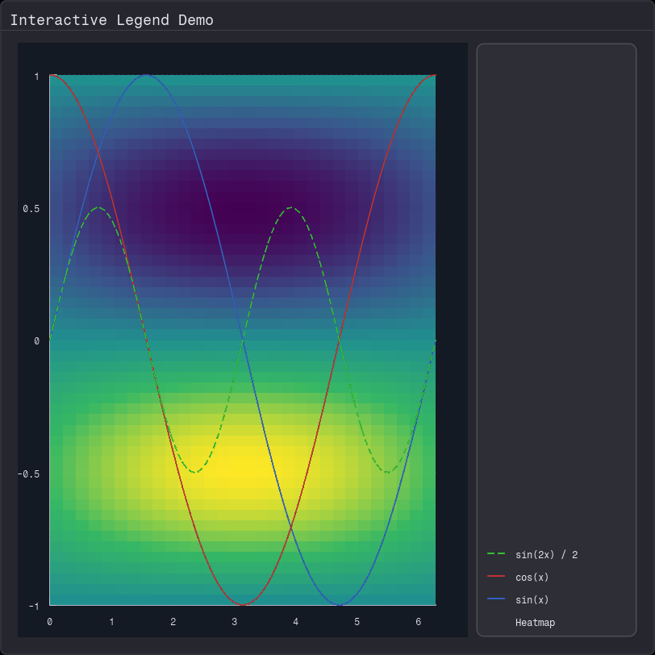

Interactive Legend
Click on legend items to toggle visibility of plot elements.
using Fugl
# Dark theme plot style
style = Ref(PlotStyle(
background_color=Vec4f(0.08, 0.10, 0.14, 1.0),
show_grid=true,
grid_color=Vec4f(0.25, 0.25, 0.30, 1.0),
axis_color=Vec4f(0.9, 0.9, 0.95, 1.0),
show_left_axis=true,
show_bottom_axis=true,
show_x_tick_labels=true,
show_y_tick_labels=true
))
# Create sample data
x = range(0, 2π, length=100)
line1_data = (collect(Float32, x), sin.(x) .|> Float32)
line2_data = (collect(Float32, x), cos.(x) .|> Float32)
line3_data = (collect(Float32, x), sin.(x .* 2) .* 0.5 .|> Float32)
# Create heatmap data - gradient background
heatmap_x = range(0, 2π, length=50)
heatmap_y = range(-1, 1, length=30)
heatmap_data = [sin(x) * cos(y) for y in heatmap_y, x in heatmap_x] .|> Float32
# Store plot elements in a Ref for dynamic updates
# Heatmap goes first so it renders in the back
elements = Ref([
HeatmapElement(
heatmap_data;
x_range=(0.0, 2π),
y_range=(-1.0, 1.0),
colormap=:viridis,
value_range=(-1.0, 1.0),
label="Heatmap"
),
LinePlotElement(
line1_data[2];
x_data=line1_data[1],
color=Vec4f(0.2, 0.4, 0.8, 1.0),
width=2.0f0,
label="sin(x)"
),
LinePlotElement(
line2_data[2];
x_data=line2_data[1],
color=Vec4f(0.8, 0.2, 0.2, 1.0),
width=2.0f0,
label="cos(x)"
),
LinePlotElement(
line3_data[2];
x_data=line3_data[1],
color=Vec4f(0.2, 0.8, 0.2, 1.0),
width=2.0f0,
line_style=DASH,
label="sin(2x) / 2"
)
])
# Plot state
plot_state = Ref(PlotState())
function app()
Card(
"Interactive Legend Demo",
IntrinsicRow([
Plot(
elements[],
style[],
plot_state[],
(new_state) -> plot_state[] = new_state
),
FixedWidth(
Container(
Legend(
elements[],
text_style=TextStyle(size_px=12, color=Vec4f(0.9, 0.9, 0.95, 1.0)),
on_click=(idx) -> begin
# Toggle muted state of clicked element
old_elem = elements[][idx]
new_elem = toggle_mute(old_elem)
# Update elements array
new_elements = copy(elements[])
new_elements[idx] = new_elem
elements[] = new_elements
end
),
style=ContainerStyle(
background_color=Vec4f(0.18, 0.18, 0.22, 0.95),
border_color=Vec4f(0.3, 0.3, 0.35, 1.0),
border_width=2.0f0,
padding=10.0f0,
corner_radius=8.0f0
)
),
200.0f0
)
]),
style=ContainerStyle(
background_color=Vec4f(0.15, 0.15, 0.18, 1.0),
border_color=Vec4f(0.25, 0.25, 0.30, 1.0),
border_width=1.5f0,
padding=12.0f0,
corner_radius=6.0f0
),
title_style=TextStyle(size_px=18, color=Vec4f(0.9, 0.9, 0.95, 1.0))
)
end
screenshot(app, "cartesianLegendInteractive.png", 812, 812);